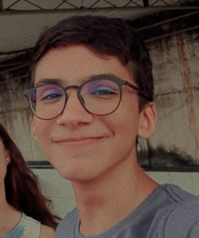
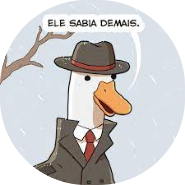

Matheus “Potter” Barros é natural de Volta Azul, Bernampuco, Brasil.
Além de programador e designer, Barros tem como passatempo a observação dos astros (stargazing) e jogar quadribol.

Rafael “The Duck” Amorim é natural de Sameió, Osrios, Brasil.
Além de possuir uma paixão pela música eletrônica e pelo rock progressivo, é físico, programador e observador das estrelas.